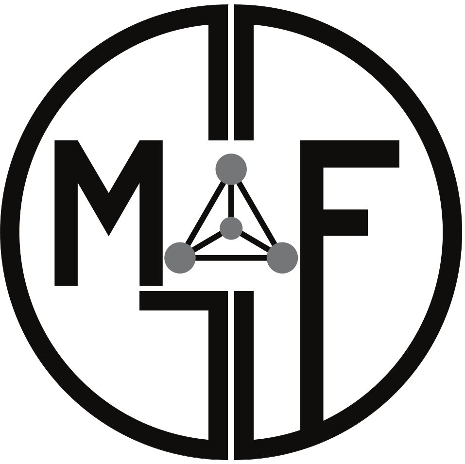

Missão
Software
Publicações
Equipe
Serviços
Contato
Entre em contato
Voltar para a equipe
RN
Foto em breve.
Estudante
Renan Nilton Santos
Estudante · GDMAF · UNIFEI
Resumo do currículo será adicionado em breve.
Currículo Lattes